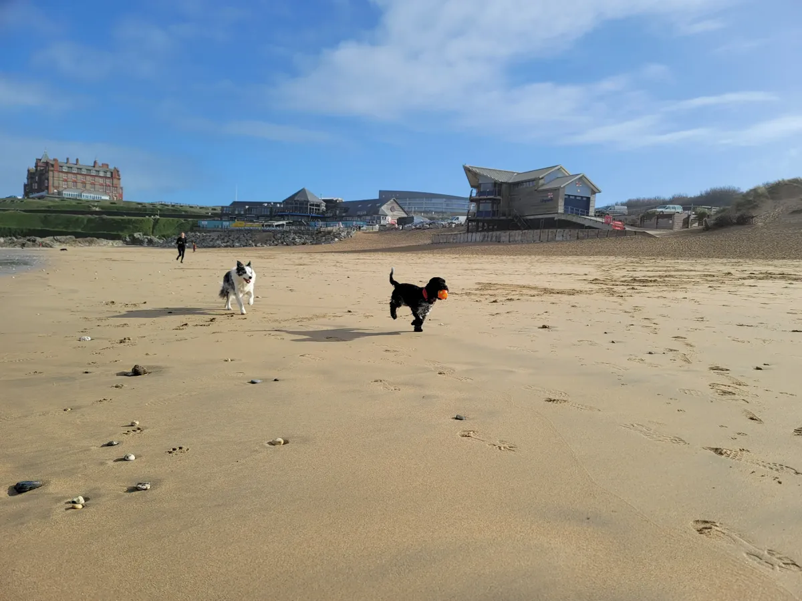

Evening & Weekend Dog Walking in Newquay
Proper Walks, Not a Quick Trip Round the Block
Every walk is at least 60 minutes. I take dogs out on the beaches, coastal paths, and quiet lanes around Newquay — proper off-lead adventures, not 20 minutes on a pavement. Your dog comes back tired, happy, and clean (I rinse and dry them before drop-off).
I mostly walk evenings and weekends, which works well for shift workers, people with busy weekends, or holiday makers who want their dog walked while they're out exploring. I GPS track every walk so you can see exactly where we went, and I send photos every time.
What You Get
- Minimum 60-minute walk — we never cut corners on time
- GPS tracked — see exactly where your dog has been via our tracking app
- Light-up collars provided — for safe evening walks in low light
- Rinse & towel dry — your dog comes home clean, not muddy
- Photo updates — pictures from every walk so you never miss a moment
How It Works
- Free Meet & Greet — We visit you and your dog at home. No commitment, just a chat to see if we're the right fit.
- Book Your Walks — Set up a regular schedule or book ad-hoc walks as needed. We're flexible.
- We Collect & Walk — We pick your dog up, head out for a minimum 60-minute adventure, and return them happy and tired.
- Updates & Return — You receive GPS tracking data and photos. Your dog is rinsed and dried before we leave.
Evening & Weekend Dog Walking
Minimum 60 Minutes
- 60+ Minute GPS Tracked Walk
- Evenings & Weekends
- Light-Up Collars Provided
- Rinse & Towel Dry on Return
- Photo Updates Every Walk
Where We Walk
We know Newquay and the surrounding area inside out. Our walks take in some of the best scenery Cornwall has to offer, and we vary routes to keep things interesting for your dog.
- Fistral Beach — wide open sands, perfect for off-lead runs
- The Gannel Estuary — calm, scenic walks along the water
- Colan & Porth — quiet lanes and coastal paths away from the crowds
- Local woodland routes — sheltered trails ideal for rainy evenings

Dog Walking FAQs
What routes do you take?
We vary routes including local beaches, coastal paths, and quiet lanes around Newquay to keep things interesting for your dog. We'll find the best routes for your dog's energy level and temperament.
Do you walk in the rain?
Yes, rain or shine — every walk goes ahead. We carry professional drying equipment so your dog is returned as clean and dry as possible, no matter the weather.
Can you walk reactive dogs?
We assess each dog individually at the free meet & greet. We have experience working with reactive dogs and will tailor the walk — route, timing and group size — to your dog's needs.
What Dog Owners Say
"Oli is brilliant at his job and my dog loves him. He is really flexible and will walk my dog at short notice. Highly recommend."
"Been walking our dog Rupert for over 2 years now... especially enjoy the app updates! I can highly recommend."
Need a Full Day?
If your dog needs more than a walk, our Weekend Daycare takes them on a full-day adventure to Bodmin Moor, beaches and woodlands from 09:00 to 16:30.
Try Our Weekend Daycare →Book Your Dog's First Walk
Get in touch to arrange a free meet & greet. We'll visit you at home, meet your dog, and plan the perfect walking schedule.